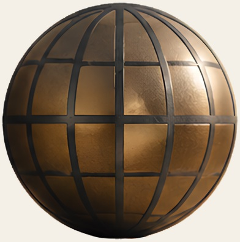
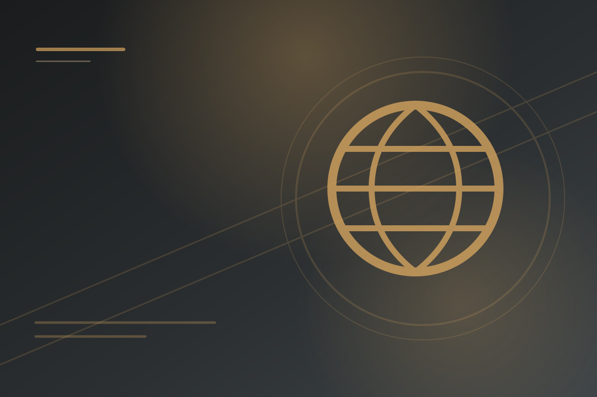
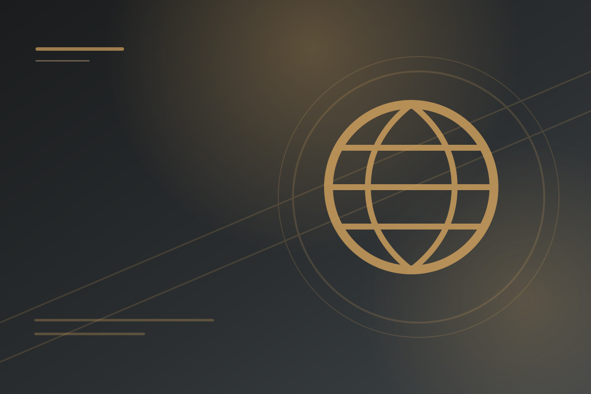
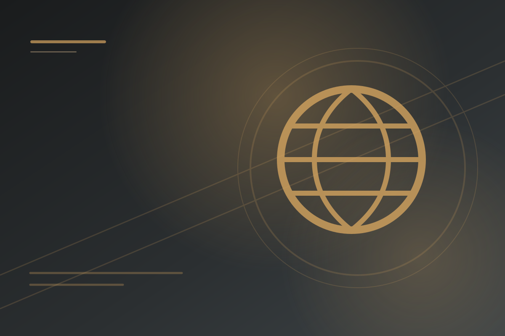
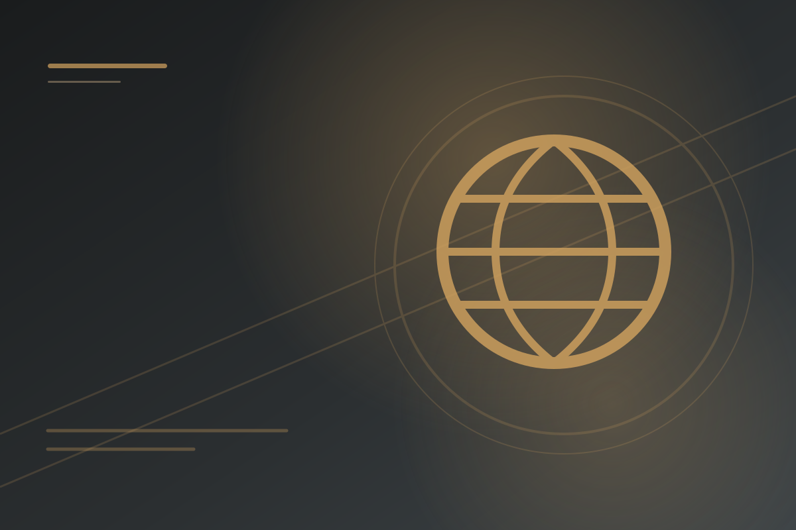
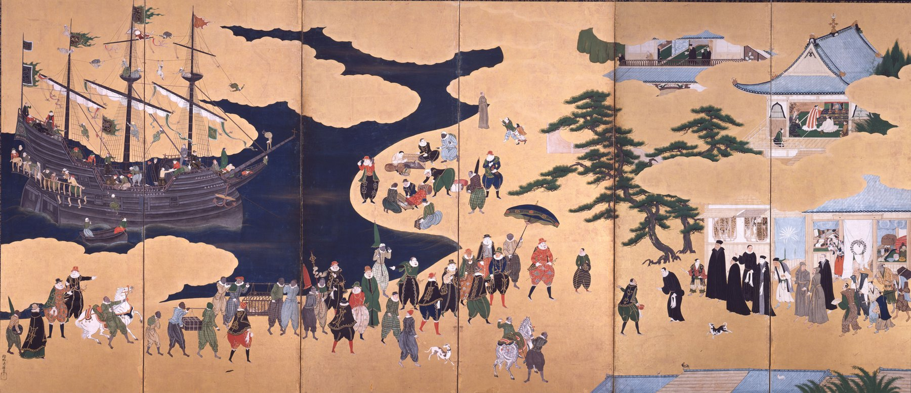
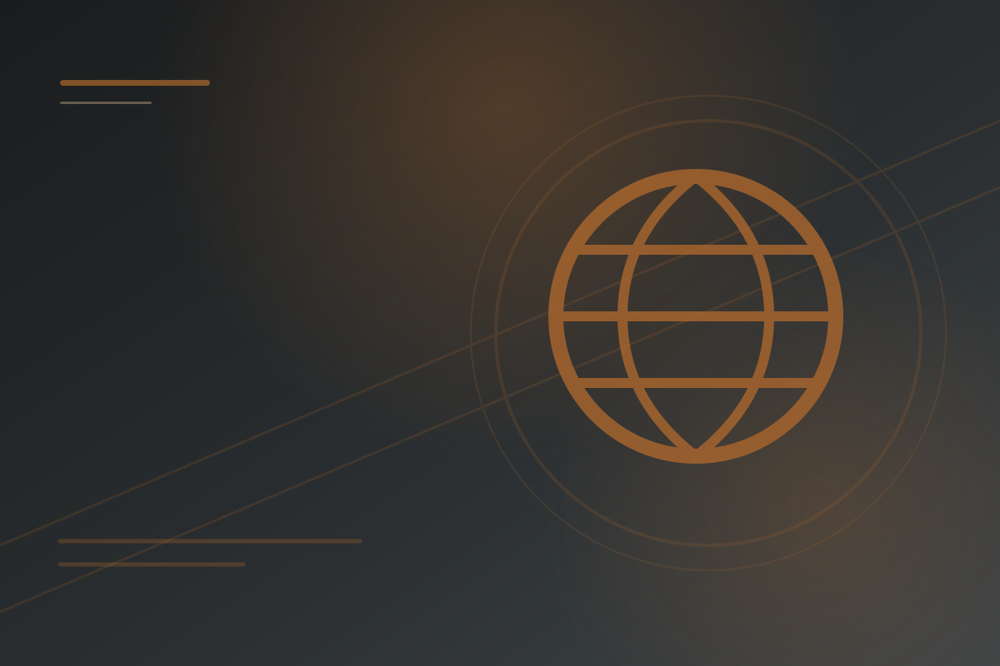
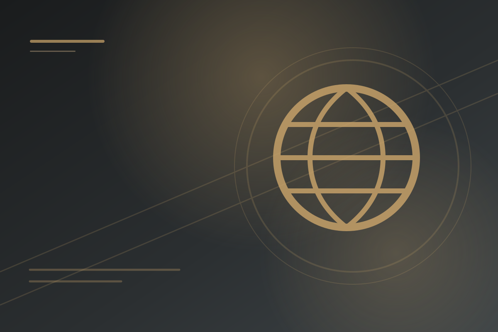
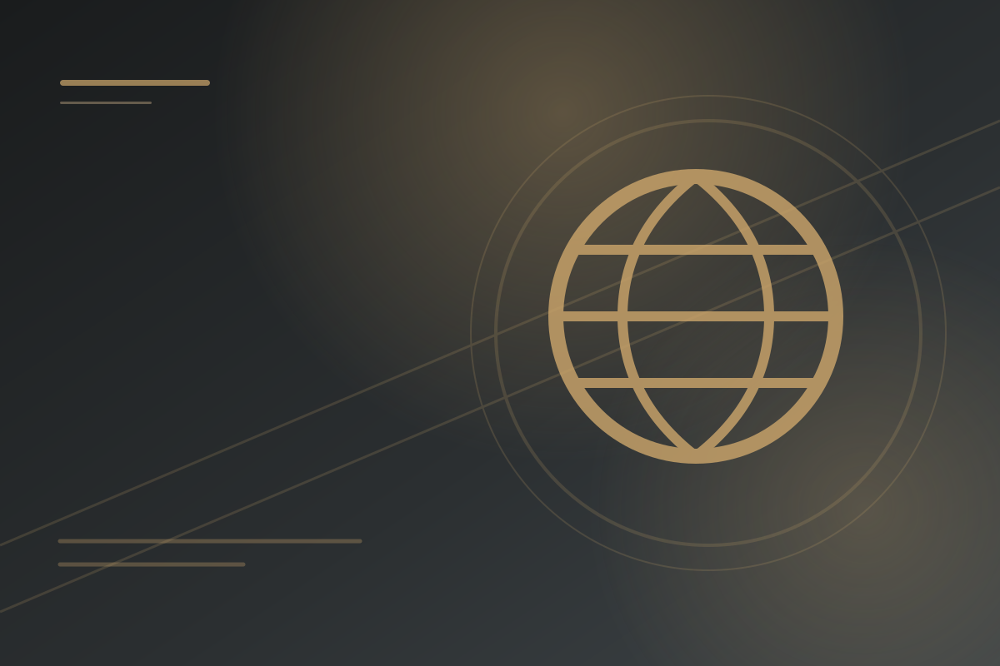
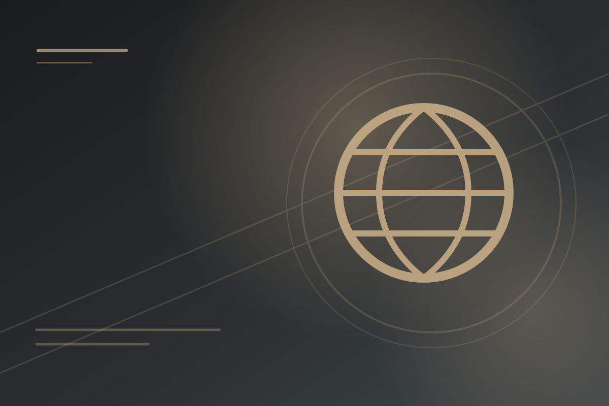

Explore Transoceanic Interconnections
Click a place or connection to explore ocean travel, exchange, empire, labor, and resistance.
Transoceanic Interconnections
Maritime exploration, exchange, empire, labor, and global economic transformation from c. 1450 to c. 1750.


Technological Innovations
Maritime technology and knowledge that made oceanic travel possible.


Exploration: Causes and Events
Motives, sponsors, routes, and early maritime encounters.


Columbian Exchange
Plants, animals, disease, people, and environmental transformation.


Maritime Empires Established
Trading posts, Asian and African states with their own rules, and labor and slavery old and new.


Maritime Empires Maintained
Labor systems, colonial administration, and imperial competition.


Internal and External Challenges
Resistance, competition, and conflict within maritime empires.


Changing Social Hierarchies
Race, caste, labor, and social order in colonial societies.


Continuity and Change
Global economic, social, and cultural change from 1450 to 1750.